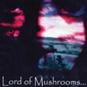

| Artist: | Lord of Mushrooms |
| Title: | Lord Of Mushrooms |
| Label: | Musea FGBG 4456.AR |
| Length(s): | 53 minutes |
| Year(s) of release: | 2002 |
| Month of review: | [03/2003] |
| 1) | Void | 8.55 |
| 2) | Predictions | 9.07 |
| 3) | The Man Outside | 7.33 |
| 4) | The Dream | 5.51 |
| 5) | Collision | 5.41 |
| 6) | Coma | 9.02 |
| 7) | Afterlife | 7.44 |
A piano opens Predictions, which again sounds very much like Jadis and some Enchant as well. I am not sure what it is exactly, but the music here simply does not strike a chord with me. It seems to me that the song, especially the vocal melodies lack distinction, they fill the void between the instrumental parts and I find them rather tiring. The most likable parts about this track are the keyboards, and the fast guitars runs which stay in the back. The drumming is good enough, but it lies too much on top of the music. Past halfway we get a Latin interlude in the song, somewhat oriented on Chick Corea. The song ends with filmic keyboards.
The Man Outside is better, especially since the vocal melodies are good this time, with some typical Beard intermezzo's in there. The guitar can be quite rough on this one, but this is mainly a balladic track with some jazzy excursions in the beginning. Unfortunately The Dream is less likable again. I have to admit though that the band is taking chances on this one with the heavy droning middle part, some good guitar playing and interaction with the pounding piano there. But the vocal parts are a bore.
On Collision, we have two vocalists, one singing in low second voice to the other. It doesn't work well. Again, the jazziness in the keyboards strike me on this track. With Coma we open rather softly with nylon string guitars and filmic keyboards. Then the pace comes into the song, it seems we are on for a long instrumental introduction. The rhythm guitar start the drive, the keyboards move into Rudess like territory: lots of fiddling about going on. Again, the band inserts a jazzy influence here and there, something they do in almost every track. In the middle the song is quite pacey, with occasional injections on the keys. Melodically the song is not that enticing, seems mostly playing for playing sake. The final part is thematic and on the mellow side of things.
Afterlife makes on me a somewhat underproduced impression. The vocals are very much in the back, some of the parts being quite nice and identifiable (the solo up-tempo one and the part leading up to it), some being more vague and uneventful. Vocal harmonies is something this band should practice on a bit more, or simply avoid. Plenty of tempo changes in this track. The instrumental part behaves more like that of a jazzrock band.